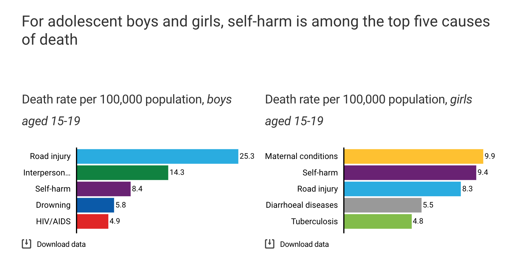
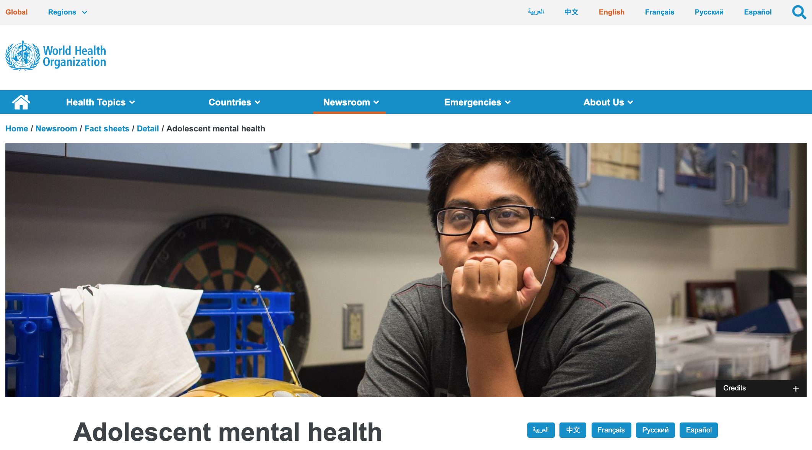
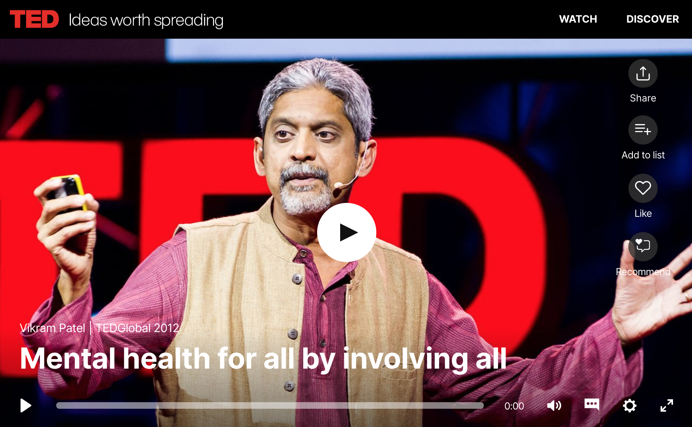

UNICEF

UNICEF’s article, “Adolescent Mental Health,” states that “while there are many
factors that significantly affect adolescence, mental health and well-being have
often been overlooked.” The organization believes that more attention needs to be
brought to these issues, and describes its efforts to collect more data on the topic.
Some of the striking statistics this website presents are shown above; for adolescents,
self-harm is in the top five causes of death. There are about 1.2 billion adolescents
in the world today, so an average of 9 adolescents out of 100,000 people means that a
total of over 100,000 individuals die each year as a result of self-harm. It is data
like this that people need to know in order for change to happen.
World Health Organization

According to the World Health Organization, “the consequences of not addressing
adolescent mental health conditions extend to adulthood, impairing both physical
and mental health and limiting opportunities to lead fulfilling lives as adults.”
This is exactly why raising awareness about the way we educate people about mental
health is so important. Some other interesting facts from this website include that
half of all mental health issues start by the age of 14, but most people go untreated,
and that suicide is the third leading cause of death in adolescents.
This website also describes factors that are more likely to put adolescents at
risk of developing severe mental health illnesses, like as stigma and lack of access
to support and services. In addition, it provides detail into categories of mental health
conditions, including emotional disorders, childhood behavioral disorders, eating disorders,
psychosis, suicide and self-harm, and risk-taking behaviors. Most importantly, the World
Health Organization also lists strategies and tools for raising awareness and getting help.
U.S. Department of Health & Human Services
The U.S. Department of Health and Human Services has Adolescent Mental Health Fact Sheets
available on their website, sorted out by state. These sheets have information regarding
depression symptoms, depressive episodes, suicidal thoughts, and suicide attempts among high
school students from 2017 in that state, and compare these numbers to national data. The fact
that 31% of high school students in the U.S. reported feeling “sad or hopeless almost every
day for 2 or more weeks in a row so that they stopped doing some usual activities” during 2017
is a cause for concern. A third of high schoolers have symptoms of depression, and there is
nothing present in the current educational curriculum to help alleviate these issues.
TED Talk

In “Mental health for all by involving all,” Vikram Patel describes the difference between
going to a doctor to discuss physical pain and a mental health issue. So many people have
mental health issues all over the world, but not everyone’s pain is taken seriously. In this
TED talk, Patel describes how to train ordinary individuals to recognize mental health
symptoms and help provide care to those who are struggling. By raising awareness and providing
a guide for offering others support, we can all be part of the solution. When we listen to other’s
stories and learn, we can find ways to fix this issue on a global scale. This ties into the part
of my project where I want to share stories from adolescents, as well as provide tips for
spreading the message and helping out in the community.
Sources
“Adolescent Mental Health Statistics.” UNICEF DATA, Aug. 2019, data.unicef.org/topic/child-health/mental-health/.
“Adolescent Mental Health.” World Health Organization, World Health Organization, Oct. 2019, www.who.int/news-room/fact-sheets/detail/adolescent-mental-health.
“National and State Data Sheets.” HHS.gov, US Department of Health and Human Services, 1 July 2019, www.hhs.gov/ash/oah/facts-and-stats/national-and-state-data-sheets/index.html.
Patel, Vikram. “Transcript of ‘Mental Health for All by Involving All.’” TED, TED, June 2012, www.ted.com/talks/vikram_patel_mental_health_for_all_by_involving_all/transcript.